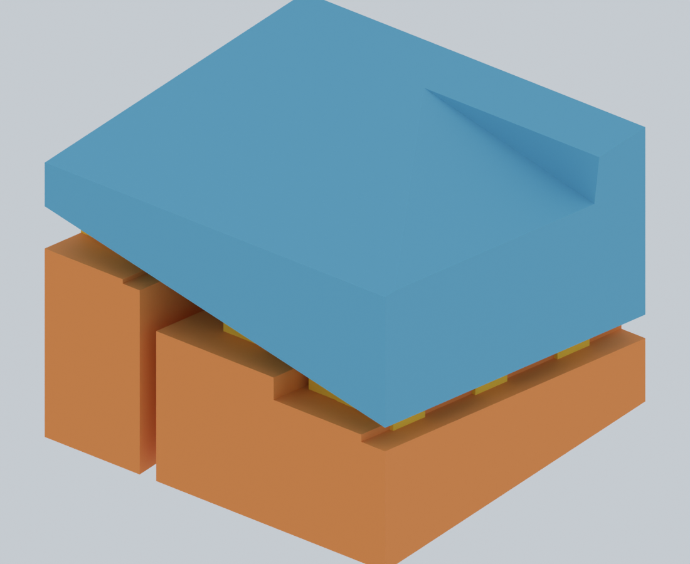

F01 / O22-F3 试打建议已撤回：盒腔内顶板缺少支撑，当前请勿打印 F01。其它盘也不能沿用原检查结果视为已通过全面支撑覆盖验收。已有支撑的连接检查不等于所有悬空部位获得支撑。
查看已确认的问题与证据。以下旧报告保留供审计，原 F01 试打建议作废。
← 彩色三维与打印文件 · 安装教程
POSEDOLL / O22-F3
验证结果与使用说明
这是工程试打版。支撑落盘、几何接触与实际出丝检查通过；尚未进行实物打印、拆除或力学验收。Orca 切片仍有 149 处局部出丝候选缺少前层覆盖，拓竹有 145 处。下方保留全部定位，不能据此宣称整套打印成功率已经验证。
150保留原形状的零件类型
186 + 7主套实例 + 额外试件
13 × 2同一几何，两种原生切片工程
11采用新打印朝向的类型
胸架 X046 的具体变化
胸架单独放在 F01，盒子开口转向上方；多个宽鳍分布在盒体下方和骨架悬挑下方，全部从热盘起始。较高面板带横向加强，后补的 6 块局部面板又增加 17 根横向肋。主体不得穿入零件，只有黄色牺牲齿允许嵌入。
整件打印高度由 99.0 增为 129.3 mm；最高鳍由 90.8 降为 86.5 mm。支撑几何体积由 53.4 增为 113.5 cm³。这个取舍增加了支撑用量，换取更分散的支承和较少的大面积跨空；没有把高件说成已经通过抗摆动测试。

选择依据与零件改形检查
先筛选朝向和落盘通路，再实际切片。部分几何评分较好的候选在出丝检查中退步，已恢复 F2 朝向；传感器卡匣也保留弹片长度在层面内的方向。最终保留的朝向变化是 X046, H010, P034, P050, P116, P185, W002, W003, X042, X050, X073。
尝试过在胸架内部固定柱增加四条永久加强筋，并检查了 1,521 个装配实体和 107 个姿态样本。它们改善了旧角度，但在最终新角度下没有进一步改善切片，因此没有采用。最终 150 种本体网格只作刚性变换，孔径、轴线、限位、PCB 高度和装配轮廓全部保留；姿态范围没有因本体改形而改变。
连接齿中不参与有效连接的细尖尾已修剪；五处原有短齿加宽到 1.0 × 1.1 mm，修正局部层不出丝的问题。接触示例是实际网格裁切，不是示意图。

数字检查范围
- 150 种本体与源网格逐顶点、逐三角形核对；旋转矩阵无缩放。鳍与本体的体积交叠为零，功能保护区无支撑侵入。
- 每个鳍连通体到达 Z=0，在首层有截面与实际出丝；每个齿连通体都与鳍和本体有实际体积交叠。高面板的加强记录也被检查。
- OrcaSlicer 2.4.2 和 Bambu Studio 2.8.2.61 分别导出原生工程。导出前后的三角网格和位置核对通过，未发生自动修网格，自动支撑关闭。
- 使用 G-code 的实际正向挤出路径、圆弧与线宽重建二维覆盖，检查真实齿截面，不只检查包围框。6617 个齿实例及 290 个支撑连通体完成检查。完全嵌入本体且小于 0.02 mm² 的离散尖端，只有在其它层已能证明两端有出丝连接时才单独注明；悬空齿颈缺层不会被豁免。详细原始记录保留在报告中。
- 另外检测当前层中面积大于 0.05 mm²、与前层外扩 0.025 mm 后交叠仍小于 0.001 mm² 的出丝连通区域。它是复核线索，不是熔丝、受力或冷却仿真。
逐件几何报告 · 汇总与文件哈希 · 候选取舍
与 F2 的同类检测对比
拓竹出丝覆盖检测：F2 共 148 处、总面积 61.13 mm²、最大单处 2.526 mm²；F3 共 145 处、总面积 51.68 mm²、最大单处 0.938 mm²。数量与面积都保留，避免只报告有利指标。两种切片器的结果也未混为一组。
仍需复核的出丝区域
下面定位来自交付的 Orca 工程。红框表示候选范围；灰色为前层、蓝色为当前层的实际线宽覆盖。存在疑点时，不能把它自动解释为可安全桥接。全部位置 CSV。
S01：6 处候选
| 序号 | 对象 | Z / mm | 面积 / mm² | 检查 |
|---|
| 1 | S01-06 X005 head/C01_sensor_cassette | 0.40 | 0.602 | 三维定位 · 实际出丝图 |
| 2 | S01-01 P130 foot_l/C14 | 11.60 | 0.162 | 三维定位 · 实际出丝图 |
| 3 | S01-01 P130 foot_l/C14 | 11.80 | 0.528 | 三维定位 · 实际出丝图 |
| 4 | S01-01 P130 foot_l/C14 | 12.60 | 0.214 | 三维定位 · 实际出丝图 |
| 5 | S01-01 P130 foot_l/C14 | 14.00 | 0.230 | 三维定位 · 实际出丝图 |
| 6 | S01-01 P130 foot_l/C14 | 14.40 | 0.157 | 三维定位 · 实际出丝图 |
F01：13 处候选
| 序号 | 对象 | Z / mm | 面积 / mm² | 检查 |
|---|
| 1 | F01-01 X046 frame/chest | 3.20 | 0.656 | 三维定位 · 实际出丝图 |
| 2 | F01-01 X046 frame/chest | 12.00 | 0.938 | 三维定位 · 实际出丝图 |
| 3 | F01-01 X046 frame/chest | 16.60 | 0.291 | 三维定位 · 实际出丝图 |
| 4 | F01-01 X046 frame/chest | 21.00 | 0.273 | 三维定位 · 实际出丝图 |
| 5 | F01-01 X046 frame/chest | 21.60 | 0.289 | 三维定位 · 实际出丝图 |
| 6 | F01-01 X046 frame/chest | 22.80 | 0.687 | 三维定位 · 实际出丝图 |
| 7 | F01-01 X046 frame/chest | 22.80 | 0.187 | 三维定位 · 实际出丝图 |
| 8 | F01-01 X046 frame/chest | 23.40 | 0.634 | 三维定位 · 实际出丝图 |
| 9 | F01-01 X046 frame/chest | 24.60 | 0.157 | 三维定位 · 实际出丝图 |
| 10 | F01-01 X046 frame/chest | 46.40 | 0.158 | 三维定位 · 实际出丝图 |
| 11 | F01-01 X046 frame/chest | 46.80 | 0.493 | 三维定位 · 实际出丝图 |
| 12 | F01-01 X046 frame/chest | 49.80 | 0.147 | 三维定位 · 实际出丝图 |
| 13 | F01-01 X046 frame/chest | 53.60 | 0.158 | 三维定位 · 实际出丝图 |
F02：11 处候选
| 序号 | 对象 | Z / mm | 面积 / mm² | 检查 |
|---|
| 1 | F02-01 X054 frame/clavicle_l | 6.60 | 0.158 | 三维定位 · 实际出丝图 |
| 2 | F02-01 X054 frame/clavicle_l | 7.20 | 0.222 | 三维定位 · 实际出丝图 |
| 3 | F02-04 P130 foot_r/C14 | 11.60 | 0.162 | 三维定位 · 实际出丝图 |
| 4 | F02-04 P130 foot_r/C14 | 11.80 | 0.528 | 三维定位 · 实际出丝图 |
| 5 | F02-04 P130 foot_r/C14 | 12.60 | 0.214 | 三维定位 · 实际出丝图 |
| 6 | F02-01 X054 frame/clavicle_l | 13.20 | 0.540 | 三维定位 · 实际出丝图 |
| 7 | F02-04 P130 foot_r/C14 | 14.00 | 0.231 | 三维定位 · 实际出丝图 |
| 8 | F02-04 P130 foot_r/C14 | 14.40 | 0.157 | 三维定位 · 实际出丝图 |
| 9 | F02-01 X054 frame/clavicle_l | 20.20 | 0.288 | 三维定位 · 实际出丝图 |
| 10 | F02-02 X062 frame/clavicle_r | 23.60 | 0.275 | 三维定位 · 实际出丝图 |
| 11 | F02-02 X062 frame/clavicle_r | 25.60 | 0.158 | 三维定位 · 实际出丝图 |
F03：16 处候选
| 序号 | 对象 | Z / mm | 面积 / mm² | 检查 |
|---|
| 1 | F03-09 X006 head/C02_sensor_cassette | 0.40 | 0.602 | 三维定位 · 实际出丝图 |
| 2 | F03-09 X006 head/C02_sensor_cassette | 0.40 | 0.603 | 三维定位 · 实际出丝图 |
| 3 | F03-10 X009 upperarm_r/C01_sensor_cassette | 0.40 | 0.602 | 三维定位 · 实际出丝图 |
| 4 | F03-10 X009 upperarm_r/C01_sensor_cassette | 0.40 | 0.602 | 三维定位 · 实际出丝图 |
| 5 | F03-01 X038 frame/pelvis | 21.20 | 0.157 | 三维定位 · 实际出丝图 |
| 6 | F03-01 X038 frame/pelvis | 22.20 | 0.158 | 三维定位 · 实际出丝图 |
| 7 | F03-01 X038 frame/pelvis | 22.40 | 0.289 | 三维定位 · 实际出丝图 |
| 8 | F03-01 X038 frame/pelvis | 23.20 | 0.472 | 三维定位 · 实际出丝图 |
| 9 | F03-01 X038 frame/pelvis | 23.60 | 0.157 | 三维定位 · 实际出丝图 |
| 10 | F03-01 X038 frame/pelvis | 24.40 | 0.361 | 三维定位 · 实际出丝图 |
| 11 | F03-01 X038 frame/pelvis | 27.40 | 0.231 | 三维定位 · 实际出丝图 |
| 12 | F03-01 X038 frame/pelvis | 29.00 | 0.389 | 三维定位 · 实际出丝图 |
| 13 | F03-01 X038 frame/pelvis | 30.00 | 0.158 | 三维定位 · 实际出丝图 |
| 14 | F03-01 X038 frame/pelvis | 30.00 | 0.900 | 三维定位 · 实际出丝图 |
| 15 | F03-01 X038 frame/pelvis | 30.20 | 0.157 | 三维定位 · 实际出丝图 |
| 16 | F03-01 X038 frame/pelvis | 30.80 | 0.223 | 三维定位 · 实际出丝图 |
F04：5 处候选
| 序号 | 对象 | Z / mm | 面积 / mm² | 检查 |
|---|
| 1 | F04-03 W016 frame/foot_l | 4.60 | 0.169 | 三维定位 · 实际出丝图 |
| 2 | F04-03 W016 frame/foot_l | 4.80 | 0.235 | 三维定位 · 实际出丝图 |
| 3 | F04-03 W016 frame/foot_l | 6.20 | 0.289 | 三维定位 · 实际出丝图 |
| 4 | F04-03 W016 frame/foot_l | 9.60 | 0.162 | 三维定位 · 实际出丝图 |
| 5 | F04-03 W016 frame/foot_l | 12.00 | 0.245 | 三维定位 · 实际出丝图 |
F05：6 处候选
| 序号 | 对象 | Z / mm | 面积 / mm² | 检查 |
|---|
| 1 | F05-01 W005 frame/clavicle_l.protract_frame | 6.60 | 0.171 | 三维定位 · 实际出丝图 |
| 2 | F05-02 H008 frame/clavicle_r.protract_frame | 10.80 | 0.231 | 三维定位 · 实际出丝图 |
| 3 | F05-03 X080 frame/thigh_r | 11.60 | 0.149 | 三维定位 · 实际出丝图 |
| 4 | F05-03 X080 frame/thigh_r | 14.20 | 0.246 | 三维定位 · 实际出丝图 |
| 5 | F05-03 X080 frame/thigh_r | 16.80 | 0.290 | 三维定位 · 实际出丝图 |
| 6 | F05-01 W005 frame/clavicle_l.protract_frame | 34.20 | 0.232 | 三维定位 · 实际出丝图 |
F06：11 处候选
| 序号 | 对象 | Z / mm | 面积 / mm² | 检查 |
|---|
| 1 | F06-01 X073 frame/thigh_l | 8.20 | 0.200 | 三维定位 · 实际出丝图 |
| 2 | F06-01 X073 frame/thigh_l | 10.80 | 0.255 | 三维定位 · 实际出丝图 |
| 3 | F06-02 W017 frame/foot_r | 12.40 | 0.344 | 三维定位 · 实际出丝图 |
| 4 | F06-01 X073 frame/thigh_l | 13.80 | 0.292 | 三维定位 · 实际出丝图 |
| 5 | F06-01 X073 frame/thigh_l | 15.00 | 0.286 | 三维定位 · 实际出丝图 |
| 6 | F06-01 X073 frame/thigh_l | 15.20 | 0.271 | 三维定位 · 实际出丝图 |
| 7 | F06-02 W017 frame/foot_r | 20.20 | 0.444 | 三维定位 · 实际出丝图 |
| 8 | F06-01 X073 frame/thigh_l | 20.80 | 0.158 | 三维定位 · 实际出丝图 |
| 9 | F06-01 X073 frame/thigh_l | 21.20 | 0.254 | 三维定位 · 实际出丝图 |
| 10 | F06-01 X073 frame/thigh_l | 21.40 | 0.251 | 三维定位 · 实际出丝图 |
| 11 | F06-01 X073 frame/thigh_l | 22.80 | 0.194 | 三维定位 · 实际出丝图 |
F07：20 处候选
| 序号 | 对象 | Z / mm | 面积 / mm² | 检查 |
|---|
| 1 | F07-10 X023 hand_l.flex/sensor_cassette | 0.40 | 0.602 | 三维定位 · 实际出丝图 |
| 2 | F07-10 X023 hand_l.flex/sensor_cassette | 0.40 | 0.602 | 三维定位 · 实际出丝图 |
| 3 | F07-05 P095 thigh_l/C14 | 5.20 | 0.208 | 三维定位 · 实际出丝图 |
| 4 | F07-05 P095 thigh_l/C14 | 5.20 | 0.207 | 三维定位 · 实际出丝图 |
| 5 | F07-05 P095 thigh_l/C14 | 5.20 | 0.208 | 三维定位 · 实际出丝图 |
| 6 | F07-02 P073 upperarm_r/C14 | 5.20 | 0.207 | 三维定位 · 实际出丝图 |
| 7 | F07-02 P073 upperarm_r/C14 | 5.20 | 0.214 | 三维定位 · 实际出丝图 |
| 8 | F07-02 P073 upperarm_r/C14 | 5.20 | 0.211 | 三维定位 · 实际出丝图 |
| 9 | F07-07 P117 thigh_r/C14 | 5.20 | 0.208 | 三维定位 · 实际出丝图 |
| 10 | F07-07 P117 thigh_r/C14 | 5.20 | 0.214 | 三维定位 · 实际出丝图 |
| 11 | F07-07 P117 thigh_r/C14 | 5.20 | 0.214 | 三维定位 · 实际出丝图 |
| 12 | F07-07 P117 thigh_r/C14 | 5.20 | 0.214 | 三维定位 · 实际出丝图 |
| 13 | F07-01 X066 frame/upperarm_r | 9.20 | 0.618 | 三维定位 · 实际出丝图 |
| 14 | F07-01 X066 frame/upperarm_r | 21.60 | 0.738 | 三维定位 · 实际出丝图 |
| 15 | F07-01 X066 frame/upperarm_r | 21.80 | 0.258 | 三维定位 · 实际出丝图 |
| 16 | F07-06 X042 frame/waist | 23.20 | 0.155 | 三维定位 · 实际出丝图 |
| 17 | F07-01 X066 frame/upperarm_r | 25.60 | 0.383 | 三维定位 · 实际出丝图 |
| 18 | F07-01 X066 frame/upperarm_r | 26.00 | 0.159 | 三维定位 · 实际出丝图 |
| 19 | F07-06 X042 frame/waist | 48.00 | 0.266 | 三维定位 · 实际出丝图 |
| 20 | F07-06 X042 frame/waist | 50.80 | 0.241 | 三维定位 · 实际出丝图 |
F08：13 处候选
| 序号 | 对象 | Z / mm | 面积 / mm² | 检查 |
|---|
| 1 | F08-08 W001 frame/ball_r | 3.60 | 0.257 | 三维定位 · 实际出丝图 |
| 2 | F08-08 W001 frame/ball_r | 11.20 | 0.337 | 三维定位 · 实际出丝图 |
| 3 | F08-03 P130 foot_l/C14 | 11.60 | 0.162 | 三维定位 · 实际出丝图 |
| 4 | F08-03 P130 foot_l/C14 | 11.80 | 0.533 | 三维定位 · 实际出丝图 |
| 5 | F08-03 P130 foot_l/C14 | 14.00 | 0.228 | 三维定位 · 实际出丝图 |
| 6 | F08-03 P130 foot_l/C14 | 14.40 | 0.158 | 三维定位 · 实际出丝图 |
| 7 | F08-02 X050 frame/head | 14.40 | 0.331 | 三维定位 · 实际出丝图 |
| 8 | F08-06 W004 frame/forearm_l | 14.80 | 0.196 | 三维定位 · 实际出丝图 |
| 9 | F08-02 X050 frame/head | 15.40 | 0.534 | 三维定位 · 实际出丝图 |
| 10 | F08-02 X050 frame/head | 17.20 | 0.292 | 三维定位 · 实际出丝图 |
| 11 | F08-06 W004 frame/forearm_l | 20.40 | 0.296 | 三维定位 · 实际出丝图 |
| 12 | F08-06 W004 frame/forearm_l | 20.80 | 0.159 | 三维定位 · 实际出丝图 |
| 13 | F08-06 W004 frame/forearm_l | 26.40 | 0.301 | 三维定位 · 实际出丝图 |
F09：17 处候选
| 序号 | 对象 | Z / mm | 面积 / mm² | 检查 |
|---|
| 1 | F09-10 X031 hand_r.flex/sensor_cassette | 0.40 | 0.602 | 三维定位 · 实际出丝图 |
| 2 | F09-10 X031 hand_r.flex/sensor_cassette | 0.40 | 0.602 | 三维定位 · 实际出丝图 |
| 3 | F09-04 P018 chest/C14 | 5.20 | 0.208 | 三维定位 · 实际出丝图 |
| 4 | F09-04 P018 chest/C14 | 5.20 | 0.213 | 三维定位 · 实际出丝图 |
| 5 | F09-04 P018 chest/C14 | 5.20 | 0.213 | 三维定位 · 实际出丝图 |
| 6 | F09-04 P018 chest/C14 | 5.20 | 0.214 | 三维定位 · 实际出丝图 |
| 7 | F09-06 P002 waist/C14 | 5.20 | 0.208 | 三维定位 · 实际出丝图 |
| 8 | F09-06 P002 waist/C14 | 5.20 | 0.213 | 三维定位 · 实际出丝图 |
| 9 | F09-08 P051 upperarm_l/C14 | 5.20 | 0.207 | 三维定位 · 实际出丝图 |
| 10 | F09-08 P051 upperarm_l/C14 | 5.20 | 0.214 | 三维定位 · 实际出丝图 |
| 11 | F09-06 P002 waist/C14 | 5.20 | 0.213 | 三维定位 · 实际出丝图 |
| 12 | F09-06 P002 waist/C14 | 5.20 | 0.214 | 三维定位 · 实际出丝图 |
| 13 | F09-08 P051 upperarm_l/C14 | 5.20 | 0.214 | 三维定位 · 实际出丝图 |
| 14 | F09-08 P051 upperarm_l/C14 | 5.20 | 0.214 | 三维定位 · 实际出丝图 |
| 15 | F09-02 X058 frame/upperarm_l | 11.80 | 0.266 | 三维定位 · 实际出丝图 |
| 16 | F09-02 X058 frame/upperarm_l | 12.60 | 0.272 | 三维定位 · 实际出丝图 |
| 17 | F09-02 X058 frame/upperarm_l | 13.40 | 0.249 | 三维定位 · 实际出丝图 |
F10：13 处候选
| 序号 | 对象 | Z / mm | 面积 / mm² | 检查 |
|---|
| 1 | F10-11 X008 upperarm_l/C02_sensor_cassette | 0.40 | 0.602 | 三维定位 · 实际出丝图 |
| 2 | F10-19 X013 thigh_r/C01_sensor_cassette | 0.40 | 0.602 | 三维定位 · 实际出丝图 |
| 3 | F10-13 X004 chest/C02_sensor_cassette | 0.40 | 0.602 | 三维定位 · 实际出丝图 |
| 4 | F10-17 X026 ball_l.flex/sensor_cassette | 0.40 | 0.602 | 三维定位 · 实际出丝图 |
| 5 | F10-13 X004 chest/C02_sensor_cassette | 0.40 | 0.602 | 三维定位 · 实际出丝图 |
| 6 | F10-20 X027 clavicle_r.protract/sensor_cassette | 0.40 | 0.602 | 三维定位 · 实际出丝图 |
| 7 | F10-17 X026 ball_l.flex/sensor_cassette | 0.40 | 0.602 | 三维定位 · 实际出丝图 |
| 8 | F10-18 X011 thigh_l/C01_sensor_cassette | 0.40 | 0.602 | 三维定位 · 实际出丝图 |
| 9 | F10-18 X011 thigh_l/C01_sensor_cassette | 0.40 | 0.602 | 三维定位 · 实际出丝图 |
| 10 | F10-01 P035 head/C14 | 5.20 | 0.208 | 三维定位 · 实际出丝图 |
| 11 | F10-01 P035 head/C14 | 5.20 | 0.213 | 三维定位 · 实际出丝图 |
| 12 | F10-01 P035 head/C14 | 5.20 | 0.213 | 三维定位 · 实际出丝图 |
| 13 | F10-01 P035 head/C14 | 5.20 | 0.214 | 三维定位 · 实际出丝图 |
F11：16 处候选
| 序号 | 对象 | Z / mm | 面积 / mm² | 检查 |
|---|
| 1 | F11-01 X005 head/C01_sensor_cassette | 0.40 | 0.602 | 三维定位 · 实际出丝图 |
| 2 | F11-10 X003 chest/C01_sensor_cassette | 0.40 | 0.602 | 三维定位 · 实际出丝图 |
| 3 | F11-13 X001 waist/C01_sensor_cassette | 0.40 | 0.602 | 三维定位 · 实际出丝图 |
| 4 | F11-18 X002 waist/C02_sensor_cassette | 0.40 | 0.602 | 三维定位 · 实际出丝图 |
| 5 | F11-17 X022 forearm_l.twist/sensor_cassette | 0.40 | 0.602 | 三维定位 · 实际出丝图 |
| 6 | F11-17 X022 forearm_l.twist/sensor_cassette | 0.40 | 0.602 | 三维定位 · 实际出丝图 |
| 7 | F11-15 X021 elbow_l.flex/sensor_cassette | 0.40 | 0.602 | 三维定位 · 实际出丝图 |
| 8 | F11-20 X007 upperarm_l/C01_sensor_cassette | 0.40 | 0.602 | 三维定位 · 实际出丝图 |
| 9 | F11-15 X021 elbow_l.flex/sensor_cassette | 0.40 | 0.602 | 三维定位 · 实际出丝图 |
| 10 | F11-26 X010 upperarm_r/C02_sensor_cassette | 0.40 | 0.602 | 三维定位 · 实际出丝图 |
| 11 | F11-21 X015 foot_l/C01_sensor_cassette | 0.40 | 0.602 | 三维定位 · 实际出丝图 |
| 12 | F11-26 X010 upperarm_r/C02_sensor_cassette | 0.40 | 0.602 | 三维定位 · 实际出丝图 |
| 13 | F11-24 X012 thigh_l/C02_sensor_cassette | 0.40 | 0.602 | 三维定位 · 实际出丝图 |
| 14 | F11-28 X016 foot_l/C02_sensor_cassette | 0.40 | 0.602 | 三维定位 · 实际出丝图 |
| 15 | F11-27 X014 thigh_r/C02_sensor_cassette | 0.40 | 0.602 | 三维定位 · 实际出丝图 |
| 16 | F11-27 X014 thigh_r/C02_sensor_cassette | 0.40 | 0.602 | 三维定位 · 实际出丝图 |
F12：2 处候选
| 序号 | 对象 | Z / mm | 面积 / mm² | 检查 |
|---|
| 1 | F12-05 X028 clavicle_r.elevate/sensor_cassette | 0.40 | 0.602 | 三维定位 · 实际出丝图 |
| 2 | F12-01 X017 foot_r/C01_sensor_cassette | 0.40 | 0.602 | 三维定位 · 实际出丝图 |
打印、拆除与安装
- 原 F01 试打建议已撤回；需修复内顶壁支撑后重新验收。F01 是主套胸架；S01 的 7 件是额外试件，不计入主套 186 件。F02–F12 为其余主套。
- 在对应切片器中以“项目”打开原生 3MF。配置为 A1 mini、Generic PLA、0.4 mm 喷嘴、0.20 mm 层高与首层、3 壁、20% 填充、按层打印、自动支撑关闭。改变材料、喷嘴、层高或朝向后需要重新检查。
- 每个零件与其支撑已合并成完整打印对象。保留朝向与内部相对位置；彩色页面只用于区分保留和移除部位，打印无需 AMS。
- 冷却后扶住厚壁，先剪黄色连接齿，再分段剪开橙色底脚连接并向原热盘方向退出。不要硬拉细轨、孔口或弹片。颜色显示的是实际网格；近景裁切不会修改打印文件。
- 按新版 Fxx-nn 和括号内的原 Axx-nn 编号分袋，试配实际五金与 PCB，再按 26 步教程装配。教程中的旧 A 盘示意图仅用于历史分组，新排盘以本页面为准。
已经准备好的工具
当前项目 Python 虚拟环境已具备 numpy 2.5.3、trimesh 5.1.1、shapely 2.1.2、manifold3d 3.3.2、scipy 1.18.1、rtree 1.4.1。Orca、拓竹和 Blender 已实际运行；FreeCAD / Gmsh / CalculiX 的工具基准也已验证。本次未将工具基准称为人偶受力仿真，未报告未经计算的应力、安全系数或热变形。
Python 与 Orca 工具检查 · FreeCAD 求解器基准